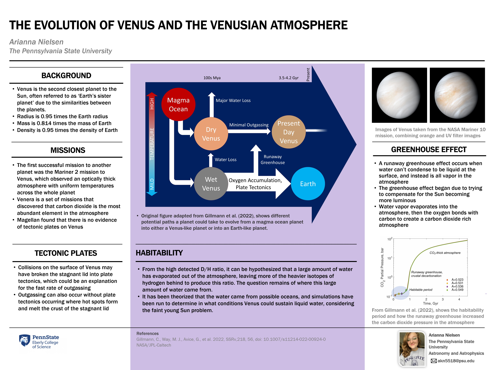

<!DOCTYPE html>
<html style="font-size: 16px;" lang="en">
<head>
    <meta name="viewport" content="width=device-width, initial-scale=1.0">
    <meta charset="utf-8">
    <meta name="keywords" content="Arianna Nielsen">
    <meta name="description" content="">
    <title>Projects</title>
    <link rel="stylesheet" href="nicepage.css" media="screen">
    <link rel="stylesheet" href="index.css" media="screen">
    <script class="u-script" type="text/javascript" src="jquery.js" defer=""></script>
    <script class="u-script" type="text/javascript" src="nicepage.js" defer=""></script>
    <meta name="generator" content="Nicepage 7.8.6, nicepage.com">
    <link id="u-theme-google-font" rel="stylesheet" href="https://fonts.googleapis.com/css?family=Roboto:100,100i,300,300i,400,400i,500,500i,700,700i,900,900i|Open+Sans:300,300i,400,400i,500,500i,600,600i,700,700i,800,800i">
    <link id="u-page-google-font" rel="stylesheet" href="https://fonts.googleapis.com/css?family=Roboto:100,100i,300,300i,400,400i,500,500i,700,700i,900,900i">
    <script type="application/ld+json">{
        "@context": "http://schema.org",
        "@type": "Organization",
        "name": "",
        "url": "/"
    }</script>
    <meta name="theme-color" content="#478ac9">
    <meta property="og:title" content="Projects">
    <meta property="og:type" content="website">
    <link rel="canonical" href="/">
    <meta data-intl-tel-input-cdn-path="intlTelInput/"></head>

    <style>
        /* Reset margin and padding for the entire page */
        * {
            margin: 0;
            padding: 0;
            box-sizing: border-box;
        }

        /* Ensure body has no padding or margin */
        body {
            margin: 0;
            padding: 0;
            height: 100%; /* Ensure full height for the body */
        }

        /* Remove extra space from header */
        header {
            margin: 0;
            padding: 0;
        }

        /* Remove gap above sections */
        section.u-section-1, section.u-section-2 {
            margin-top: 0 !important;
            padding-top: 0 !important;
        }

        /* Remove margin-bottom of sections */
        section {
            margin-bottom: 0 !important;
            padding-bottom: 0 !important;
        }

        /* Remove gaps within layout cells */
        .u-layout-cell {
            padding: 0 !important;
            margin: 0 !important;
        }

        /* Remove padding from the layout container */
        .u-layout-wrap {
            padding: 0 !important;
            margin: 0 !important;
        }

        /* Ensure images are aligned without any space around them */
        img.u-image {
            margin: 0 !important;
            padding: 0 !important;
            display: block; /* Make sure image is treated as block element */
            width: 100%; /* Ensure the image fills the container */
        }
	    @media (max-width: 768px) {
    .u-popupmenu-items .u-nav-link.u-text-active-palette-1-base {
        color: white !important;
    }
}
    </style>
</head>
<body data-home-page="https://ariannanielsen.nicepage.io/Projects.html?version=cf4f692b-7b1d-22ef-b6c4-9f2c6c17b071" data-home-page-title="Projects" data-path-to-root="./" data-include-products="false" class="u-body u-xl-mode" data-lang="en">

<header class="u-clearfix u-header u-header" id="header">
    <div class="u-clearfix u-sheet u-valign-middle-lg u-valign-middle-md u-valign-middle-sm u-valign-middle-xs u-sheet-1">
        <nav class="u-menu u-menu-one-level u-offcanvas u-menu-1" role="navigation" aria-label="Menu navigation">
            <div class="menu-collapse" style="font-size: 1rem; letter-spacing: 0px;">
                <a class="u-button-style u-custom-left-right-menu-spacing u-custom-padding-bottom u-custom-top-bottom-menu-spacing u-hamburger-link u-nav-link u-text-active-palette-1-base u-text-hover-palette-2-base" href="#" tabindex="-1" aria-label="Open menu" aria-controls="ac43">
                    <svg class="u-svg-link" viewBox="0 0 24 24"><use xlink:href="#menu-hamburger"></use></svg>
                    <svg class="u-svg-content" version="1.1" id="menu-hamburger" viewBox="0 0 16 16" x="0px" y="0px" xmlns:xlink="http://www.w3.org/1999/xlink" xmlns="http://www.w3.org/2000/svg"><g><rect y="1" width="16" height="2"></rect><rect y="7" width="16" height="2"></rect><rect y="13" width="16" height="2"></rect></g></svg>
                </a>
            </div>
            <div class="u-custom-menu u-nav-container">
                <ul class="u-nav u-unstyled u-nav-1" role="menubar">
                     <li role="none" class="u-nav-item">
    <a role="menuitem" class="u-button-style u-nav-link u-text-active-palette-1-base u-text-hover-palette-2-base" href="./" style="padding: 10px 20px;">About Me</a>
  </li>
  <li role="none" class="u-nav-item">
    <a role="menuitem" class="u-button-style u-nav-link u-text-active-palette-1-base u-text-hover-palette-2-base" href="Projects.html" style="padding: 10px 20px;">Projects</a>
  </li>
	<li role="none" class="u-nav-item">
    <a role="menuitem" class="u-button-style u-nav-link u-text-active-palette-1-base u-text-hover-palette-2-base" href="CV.html" style="padding: 10px 20px;">CV</a>
  </li>
</ul>
            </div>
            <div class="u-custom-menu u-nav-container-collapse" id="ac43" role="region" aria-label="Menu panel">
                <div class="u-palette-2-light-1 u-container-style u-inner-container-layout u-opacity u-opacity-95 u-sidenav">
                    <div class="u-inner-container-layout u-sidenav-overflow">
                        <div class="u-menu-close" tabindex="-1" aria-label="Close menu"></div>
                        <ul class="u-align-center u-nav u-popupmenu-items u-unstyled u-nav-2" role="menubar">
                              <li role="none" class="u-nav-item">
    <a role="menuitem" class="u-button-style u-nav-link u-text-active-palette-1-base u-text-hover-palette-2-base" href="./" style="padding: 10px 20px;">About Me</a>
  </li>
  <li role="none" class="u-nav-item">
    <a role="menuitem" class="u-button-style u-nav-link u-text-active-palette-1-base u-text-hover-palette-2-base" href="Projects.html" style="padding: 10px 20px;">Projects</a>
  </li>
	<li role="none" class="u-nav-item">
    <a role="menuitem" class="u-button-style u-nav-link u-text-active-palette-1-base u-text-hover-palette-2-base" href="CV.html" style="padding: 10px 20px;">CV</a>
  </li>
                        </ul>
                    </div>
                </div>
                <div class="u-black u-menu-overlay u-opacity u-opacity-70"></div>
            </div>
        </nav>
        <h1 class="u-text u-custom-font u-font-roboto" style="text-align: left; font-size: 1.8em; font-weight: 700; line-height: 1.4; margin-left: 40px;">
            My Projects
        </h1>
    </div>
</header>

<section class="u-clearfix u-section-2" id="block-1">
    <div class="u-clearfix u-sheet u-valign-top-lg u-valign-top-md u-valign-top-sm u-valign-top-xs u-sheet-1">
        <div class="data-layout-selected u-clearfix u-expanded-width u-layout-wrap u-layout-wrap-1">
            <div class="u-layout">
                <div class="u-layout-row">
                    <div class="u-container-style u-layout-cell u-size-17 u-layout-cell-1">
                        <div class="u-container-layout u-valign-top u-container-layout-1">
                            
				<br><p class="u-custom-font u-font-roboto u-text u-text-default u-text-1"> Email: <a href="mailto:akn5518@psu.edu">akn5518@psu.edu</a>
			<br> ORCiD: <a href="https://orcid.org/0000-0002-9630-832X" target="_blank" rel="noopener" data-block="17" data-block-type="Button,TextButton">0000-0002-9630-832X</a>
                        </div>
                    </div>
					    <div class="u-container-style u-layout-cell u-size-43 u-layout-cell-2">
                        <div class="u-container-layout u-container-layout-2">
                            <p class="u-custom-font u-font-roboto u-text u-text-default u-text-1">
                                <strong>A Search for Infrared Laser Emission with the Hobby-Eberly Telescope</strong><br><br>
                                This is research I did during the summer of 2025 that I presented at the PSETI Symposium in August. Below is the abstract and an image of the poster.<br><br>
                               <strong>ABSTRACT:</strong>We are developing a commensal laser technosignature search pipeline for the Habitable Zone Planet Finder (HPF) on the 10-meter Hobby-Eberly Telescope (HET). A key objective of this project is to determine the sensitivity of our pipeline in terms of the minimum detectable input laser power. To quantify the sensitivity, we first determined the instrumental efficiency of HPF as a function of wavelength. This was done by comparing the observed spectra of TOI-5205 with a theoretical stellar spectrum generated using a BT-COND model with the same stellar parameters. This comparison yields the throughput of the instrument at each wavelength. To simulate technosignature lasers, we
use laser frequency comb observations to model and inject unresolved artificial laser emission lines into the observed TOI-5205 spectra. We gradually scale the artificial laser line until the instrumentally broadened profile reaches a signal-to-noise ratio (S/N) of at least 5 two pixels away from its peak.
Using the calculated instrumental efficiency and the scaled artificial laser fluxes, we then calculate the corresponding input laser power that would be required at the telescope aperture to produce such a detectable signal. With a dataset of 14 spectra, we find that our laser search pipeline is generally sensitive in the Z, Y, and J bands to laser signals corresponding to input powers between 0.5 MW and 3 MW, assuming the laser is transmitted from a 10-meter aperture directed at Earth. These sensitivity levels are comparable to those of past laser SETI searches, and importantly, a laser of such power is well within current technological capabilities. <br><br>
                                
                           <!-- Poster Image Below the Download Link -->
                                
                    <div class="u-container-style u-layout-cell u-size-43 u-layout-cell-2">
                        <div class="u-container-layout u-container-layout-2">
                            <p class="u-custom-font u-font-roboto u-text u-text-default u-text-1">
                                <strong>Venus' Atmosphere Literature Review</strong><br><br>
                                A literature review of many different aspects of the Venusian atmosphere and the many factors over history that led to the current state of the planet's atmosphere. This was a class project where our final was a literature review of one topic we would do in depth research on. This project also involved creating and presenting a poster, which is shown below.<br><br>
                               <strong>ABSTRACT:</strong> Venus is often referred to as Earth’s sister planet, despite appearing to have such a different atmosphere and planetary environment, but was it always so different from Earth? Learning more about
the evolution of the Venusian atmosphere can give us insight into the evolution of our own atmosphere,
as well as evolution of terrestrial planets as a whole. Venus has a similar mass and radius to Earth, but
the runaway greenhouse effect has shown that even initially similar planets can evolve to be drastically
different. Some of these differences include the outgassing of entire theorized oceans despite not having
tectonic plates, this outgassing creating an optically thick atmosphere, and how the processes in the
atmosphere caused a runaway greenhouse effect not seen on any other planet in our solar system. <br><br>
                                <a href="https://pennstateoffice365-my.sharepoint.com/:b:/g/personal/akn5518_psu_edu/EaOeGG0xTaJFpxMDSinFuR8B_Q6wLFHBk-6lM1JK10Q60A?e=ugJVE7" target="_blank" rel="noopener" data-block="17" data-block-type="Button,TextButton">The Atmospheric Evolution of Earth’s Hellish Sister - A Literature Review</a></br></br>
                           <!-- Poster Image Below the Download Link -->
                                
                            </p>
                        </div>
                    </div>
                </div>
            </div>
        </div>
    </div>
</section>
<br>
                  </p>
                </div>
              </div>
            </div>
          </div>
        </div>
      </div>
    </section>
    <footer class="u-align-center u-clearfix u-container-align-center u-footer u-palette-2-light-1 u-footer" id="footer"><div class="u-clearfix u-sheet u-sheet-1">
          <br>
          <br>
        </p>
      </div></footer> 
    </section>
</body></html>
